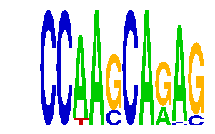

family_20 |
|---|
|  |
| Download PWM |
| Download instances (motifs) |
| Show motif distribution |
Query_ID | Query_Consensus | Subject_Name | Source_DB | Subject_ID | Length | Orientation | Offset | Divergence | Overlap | Subject_Consensus |
|---|---|---|---|---|---|---|---|---|---|---|
| family_20 | CCAAGCAGAG | NFIC | JASPAR | MA0161.1 | 6 | reverse-complement | -2 | 0.570 | 4 | TTGGCN |
Sequence | Start_position (from start) | Start_position (from end) | Average conservation | Best conservation score | Instance_with_best_CS | Best_Z-score | Instance_with_best_ZS | Strand |
|---|---|---|---|---|---|---|---|---|
| chr2:71626856-71627856 | 11 | 21 | 0.0207 | 0.046 | CCWAGCAGAS | 12.697031 | CCWAGCAGAS | 1 |
| chr9:101097667-101099404 | 1288 | 1298 | 0.0133 | 0.024 | CCRAGCARAG | 14.051098 | CCAAGCARAG | 1 |
| chr10:7561382-7562382 | 112 | 122 | 0.823 | 0.895 | CCAAGCARMG | 12.697031 | CCWAGCAGAS | -1 |
| chr9:24581818-24582818 | 129 | 139 | 0.0012 | 0.005 | CCAAGCARMG | 13.168963 | CCAASCARAG | 1 |
| chr6:24547513-24548513 | 954 | 964 | 0.2731 | 0.616 | CCAASCARAG | 13.168963 | CCAASCARAG | 1 |
| chr5:122543312-122544312 | 66 | 76 | 0.0245 | 0.032 | CCRAGCARAG | 14.051098 | CCAAGCARAG | 1 |
| chr8:35088887-35089887 | 921 | 931 | 0.0035 | 0.007 | CCAASCARAG | 13.168963 | CCAASCARAG | -1 |
| chr16:4522393-4523393 | 839 | 849 | 0.0085 | 0.047 | CCAAGCARMG | 12.672812 | CSAAGCARAG | 1 |
| chr5:77543537-77544537 | 730 | 740 | 0.4291 | 0.851 | CCWAGCAGAS | 12.697031 | CCWAGCAGAS | -1 |
| chr6:18497654-18498654 | 404 | 414 | 0.005 | 0.012 | CCAAGCARMG | 14.051098 | CCAAGCARMG | -1 |
| chr4:133848968-133849968 | 410 | 420 | 0.012 | 0.023 | CCAASCARAG | 13.168963 | CCAASCARAG | 1 |
| chr1:51348533-51349533 | 465 | 475 | 0.0005 | 0.002 | CCAAGCARMG | 13.168963 | CCAASCARAG | 1 |
| chr2:76818278-76819278 | 179 | 189 | 0.028 | 0.266 | CCRAGCARAG | 14.051098 | CCAAGCARAG | 1 |
| chr18:35193323-35194323 | 368 | 378 | 0.0012 | 0.005 | CCWAGCAGAS | 12.697031 | CCWAGCAGAS | 1 |
| chr15:76851674-76852674 | 575 | 585 | 0.0037 | 0.013 | CCAAGCARAG | 14.051098 | CCRAGCARAG | 1 |
| chr13:12461280-12462280 | 926 | 936 | 0.0044 | 0.012 | CCAAGCARMG | 12.73454 | CCWAGCARAG | 1 |
| chr13:9386406-9387406 | 34 | 44 | 0.9915 | 1 | CSAAGCARAG | 14.051098 | CCAAGCARMG | -1 |
| chr9:77195046-77196046 | 177 | 187 | 0.0017 | 0.016 | CSAAGCARAG | 14.051098 | CCAAGCARMG | 1 |
| chr9:77199918-77200918 | 56 | 66 | 0.0018 | 0.006 | CCWAGCAGAS | 12.73454 | CCWAGCARAG | 1 |
| chr2:84397126-84398126 | 53 | 63 | 0.0054 | 0.015 | CCAASCARAG | 13.168963 | CCAASCARAG | 1 |
| chr7:119885169-119886169 | 496 | 506 | 0.6975 | 0.993 | CCRAGCARAG | 14.051098 | CCAAGCARAG | 1 |